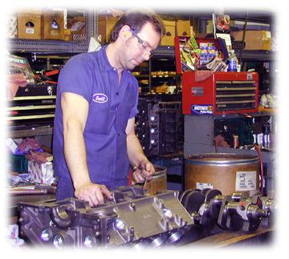

| process |
| home page |
|  |
| . The common theme linking this work is a concern for the utility and usability of the resulting systems. Eoin Brazil is a Research Assistant in the IDC at the University of Limerick. Currently working on the Sounding Object (SOB) project. He worked previously as an intern developer at Motorola B. |
| Personal interests include soccer, skiing, fishing, hard and progressive rock music. . 1996 - present Stanford University President's Scholar 1996. First English Language School, Sofia, Bulgaria, Sept. Participated in the design and development of security software applications. |